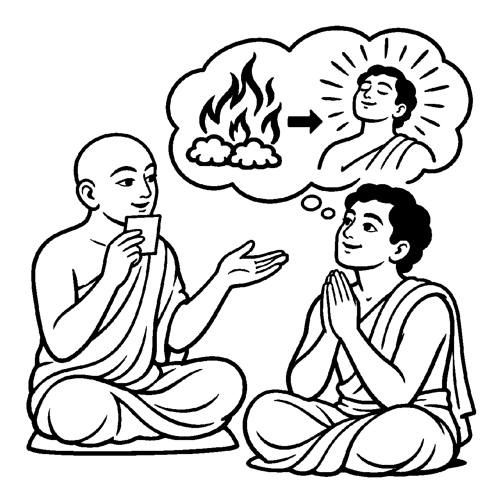

જ્યારે લોખંડનો મોટો ગોળો ધગધગતી ભઠ્ઠીમાં લાંબો સમય તપે છે, ત્યારે તે લોખંડ અને અગ્નિ વચ્ચે કોઈ ભેદ રહેતો નથી; લોખંડ સ્વયં સાક્ષાત્ લાલ અગ્નિરૂપ જ ભાસે છે. તેવી જ રીતે જ્યારે ચાર ઘાતીકર્મોનો સમૂળગો ક્ષય કરીને અરિહંત ભગવાન સાક્ષાત્ કેવળજ્ઞાન પ્રગટ કરે છે, ત્યારે વ્યવહારની ભાષામાં ભગવાન અને કેવળજ્ઞાન વચ્ચેનો ભેદ ભૂંસીને "ભગવાન આત્મા સ્વયં કેવળજ્ઞાની કે જ્ઞાનસ્વરૂપ છે" એમ અભેદપણે પ્રતિપાદિત કરવું, તે 'શુદ્ધ અભેદવિષયી અંતિમ વ્યવહારનયનામક દ્રવ્યાર્થિકનય' કહેવાય છે.
નય ૧૫ માં આત્માના ત્રૈકાલિક સ્વભાવનો અભેદ હતો, જ્યારે આ નયમાં પ્રગટ થયેલી શુદ્ધ પર્યાય (કેવળજ્ઞાન) સાથે આત્માનો અભેદ સંબંધ દર્શાવવામાં આવે છે. અહીં કેવળજ્ઞાન એ ભગવાનથી જુદી કોઈ વસ્તુ નથી; આત્મા પોતે જ પરિણમીને સાક્ષાત્ કેવળજ્ઞાન બની ગયો છે એવું દર્શન આ નય કરાવે છે.
આ નય સાધકને બતાવે છે કે મોક્ષ એ બહારથી મળતી કોઈ ભેટ નથી; જ્યારે કોઈ જીવના કર્માવરણોનો ક્ષય થાય છે, ત્યારે એ જ જીવ સિદ્ધ અવસ્થા પામે છે. તે આત્માની પોતાની મુક્તિ છે; તે અન્ય સિદ્ધો સાથે એક દ્રવ્યમાં ભળી જતો નથી.
કેવળજ્ઞાને જે રમ્યા, પ્રગટ્યો શુદ્ધ સ્વભાવ;
જ્ઞાન ને જ્ઞાની એક ગણે, શુદ્ધ અભેદ વિભાવ.

અરિહંત પ્રભુના પરમ પાવન સમવસરણમાં લાખો ભક્તો દર્શનાર્થે આવ્યા હતા. તે ભીડમાં સુમિત્ર નામનો એક શ્રાવક પ્રભુના શ્રીચરણોમાં બેસીને કરગરી રહ્યો હતો: "હે પ્રભુ! આપ ત્રિલોકના નાથ છો, અનંત કેવળજ્ઞાનના માલિક છો! આપના તે અખૂટ ખજાનામાંથી મને પણ થોડું કેવળજ્ઞાન આપી દો ને! જો આપ મને જ્ઞાનનું એક બિંદુ આપી દેશો તો મારો ઉદ્ધાર થઈ જશે!" સુમિત્ર માનતો હતો કે જ્ઞાન એ કોઈ પદાર્થ કે વસ્તુ છે જે ભગવાન પોતાની પાસેથી બીજાને આપી શકે છે. કલાકો સુધી યાચના કરવા છતાં પ્રભુ શાંત અને મૌન રહ્યા. સુમિત્રના મનમાં સંશય જાગ્યો: "શું ભગવાન કંજૂસ છે? તેઓ કેમ મને જ્ઞાન આપતા નથી?" અજ્ઞાન અને દ્વૈતની મૂંઝવણમાં તે રડવા લાગ્યો: "આ પ્રભુ-કૃપાનું સાચું રહસ્ય શું છે?"
તે સમયે સમવસરણમાં બિરાજમાન એક ગણધર ભગવંતે સુમિત્રને પાસે બોલાવી વાત્સલ્યથી કહ્યું, "સુમિત્ર, તું અજ્ઞાનવશ ભિખારી કેમ બને છે? શુદ્ધ અભેદવિષયી અંતિમ વ્યવહારનયને સમજ. કેવળજ્ઞાન કોઈ એવી વસ્તુ નથી જે ખિસ્સામાંથી કાઢીને આપી શકાય! પ્રભુ કોઈ જ્ઞાનના માલિક નથી, પ્રભુ સ્વયં સાક્ષાત્ કેવળજ્ઞાનરૂપ જ બની ચૂક્યા છે! અગ્નિ જેમ પોતાની ઉષ્મા આપી શકતો નથી પણ પોતે ઉષ્મારૂપ છે, તેમ જિનેશ્વર સ્વયં જ્ઞાનમૂર્તિ છે. તારે જો કેવળજ્ઞાન જોઈતું હોય, તો તારા પોતાના આત્માના રાગ-દ્વેષ બાળીને સ્વયં જ્ઞાનરૂપ બનવું પડશે." ગણધરદેવના આ જ્ઞાનામૃતનું પાન કરતાં જ સુમિત્રની ભિખારી-વૃત્તિ ભાંગી ગઈ. તેને સમજાયું કે ધર્મ યાચના નથી, પણ સ્વયં પ્રભુ થવાની સાધના છે. તેના અંતરમાં અભેદ આત્મજાગૃતિ પ્રગટી ઊઠી.
જો આ નય કદાગ્રહ બને, તો મનુષ્ય કેવળજ્ઞાન પર્યાયને જ શાશ્વત દ્રવ્ય માની લે છે, જેનાથી પર્યાય પૂર્વે આત્માનો અભાવ માનવો પડે તેવી ક્ષણિકવાદી ભૂલ થઈ શકે છે. આવી એકાંત જડતાથી જીવ વર્તમાન વ્યવહારિક સાધના અને કર્તવ્યોની ઉપેક્ષા કરી બેસે છે અને ક્રમિક પરિણામોને સુધાર્યા વિના અકાળે પૂર્ણતાના મિથ્યા સંતોષમાં રાચે છે.
આ જ નય જ્યારે સમન્વયશીલ બને છે, ત્યારે તે સાધકને પ્રગટ પરમાત્મદશાનો મહિમા કરાવીને આત્માના પરમ પવિત્ર શુદ્ધ પુરુષાર્થમાં લીન થવાની દિવ્ય શક્તિ આપે છે.